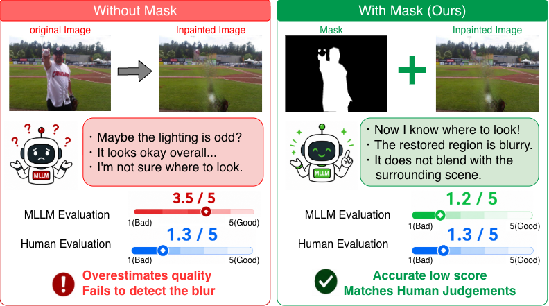
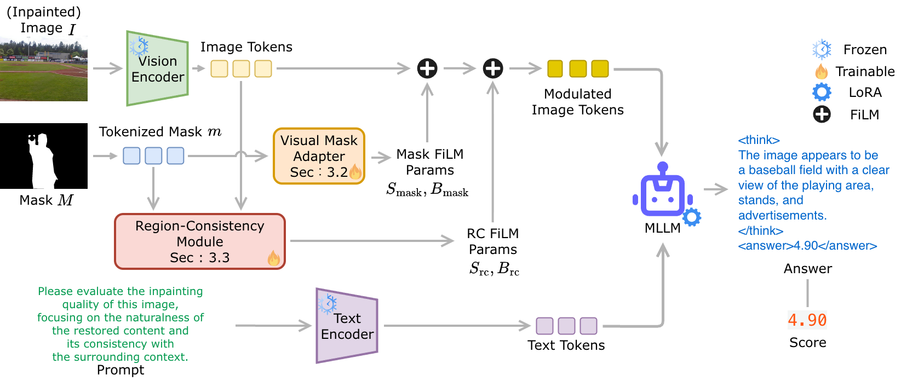

MAIQ uses the inpainting mask for feature modulation of the visual representation, yielding a score closer to human evaluation.
Abstract
Image inpainting aims to restore or modify missing regions in images, but evaluating the perceptual quality of inpainted results remains challenging because valid completions can be diverse and a unique ground-truth reference is often unavailable in practical scenarios. Existing no-reference IQA and MLLM-based IQA methods provide promising alternatives, but they are generally designed for global image quality and lack explicit awareness of the restored region.
To address this limitation, we propose MAIQ, a mask-aware framework for no-reference inpainting quality assessment. MAIQ extends MLLM-based IQA by using the inpainting mask as spatial guidance, combining token-level visual modulation with region-level consistency modeling between the restored region and its surrounding context. Experiments on NIQAD, a human-rated benchmark of 8,000 images generated by diverse inpainting methods, show that MAIQ achieves stronger correlation with human perceptual judgments than representative NR-IQA, object erasure, and reasoning-based IQA baselines.
Method

1. Visual Mask Adapter
The token-level mask is mapped to token-wise FiLM scale and shift parameters. Unlike hard masking, background tokens are preserved, so the model keeps full-image context while learning which features matter for the restored region.
2. Region-Consistency Module
Channel-wise means and standard deviations of tokens inside and outside the mask form an inner-outer descriptor, which is projected to region-level FiLM parameters applied only to restored-region tokens.
3. Reasoning & Rewards
Built on VisualQuality-R1-7B, MAIQ outputs a reasoning trace and a score. GRPO-style training combines format, differential ranking, and absolute-score rewards, with LoRA on the LLM decoder.
NIQAD Dataset
8,000
Images: 1,000 COCO originals and 7,000 inpainted results
7
Inpainting methods, from GAN-based to diffusion-based
40,000
Ratings from 167 annotators, five per image
The Naturalness-based Inpainting Quality Assessment Dataset (NIQAD) masks COCO objects covering 5–20% of the image and inpaints them with MAT, EdgeConnect, LaMa, RePaint, PowerPaint, SD2-inpainting, and OmniPaint. Annotators rate perceptual naturalness as a standalone image on a 5-point scale.

Results
0.758
SRCC with human MOS on the NIQAD test set
+0.066
SRCC gain over the strongest baseline (TOPIQ)
0.665
Zero-shot SRCC on CelebAMask-HQ inpainted images
| Method | SRCC ↑ | PLCC ↑ |
|---|---|---|
| QualiCLIP | 0.456 | 0.418 |
| DBCNN | 0.639 | 0.644 |
| MANIQA | 0.677 | 0.681 |
| TOPIQ | 0.692 | 0.693 |
| Q-Align w/ original prompt | 0.545 | 0.552 |
| Q-Align w/ inpainting prompt | 0.558 | 0.563 |
| Q-Align w/ mask prompt | 0.570 | 0.575 |
| Q-Hawkeye | 0.290 | 0.292 |
| VisualQuality-R1 zero-shot | 0.354 | 0.282 |
| VisualQuality-R1 | 0.604 | 0.597 |
| ReMOVE | -0.082 | -0.085 |
| MAIQ (Ours) | 0.758 | 0.752 |
Quantitative comparison on NIQAD. Trainable image-only baselines are re-trained on NIQAD.
| Variant | SRCC ↑ | PLCC ↑ |
|---|---|---|
| MAIQ full | 0.758 | 0.752 |
| w/o Visual Mask Adapter | 0.692 | 0.685 |
| w/o Region-Consistency Module | 0.717 | 0.708 |
| w/o Abs reward | 0.746 | 0.738 |
| w/o Diff rank reward | 0.743 | 0.751 |
Ablation study. Removing the Visual Mask Adapter causes the largest drop, and both reward terms contribute.
Qualitative Analysis

Citation
@InProceedings{Koshimoto_MAIQ_WACV2027,
author = {Koshimoto, Yota AND Uchiyama, Taiki AND Isogawa, Mariko},
title = {{MAIQ: Mask-Aware No-Reference Image Quality Assessment for Inpainting}},
booktitle = {Proceedings of the IEEE/CVF Winter Conference on Applications of Computer Vision (WACV)},
year = {2027}
}